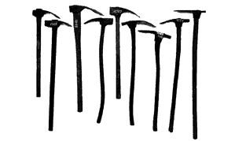

Journal Entry 9/2
J.R. Carpenter
- “Pages were built on the edge of tomorrow, full of hope for a faster connection and a more powerful computer... it was a web of amateurs soon to be washed away by dot.com ambitions, professional authoring tools and guidelines designed by usability experts.”
- The idea that a website can be cyclical as opposed to a book feels like the opposite of what we talked about in the last reading where a website slowly dies if you make it and leave it.
- “The handmade web emerged at a time when print and digital enjoyed a more symbiotic relationship.” I think we are kind of back to this since so much of printed content is digitized or uploaded to a wider audience online.
- “Layer upon layer of dated web-design aesthetics overlap and peel like wallpaper, revealing earlier versions beneath.” A continued reference to a house or things in a house… love this motif.
- “This is more than a matter of semantics. The expectations and behaviors of the next billion people to come online will have profound effects on how the internet evolves." This makes me think of how I (and other people I’ve heard) go on to their laptops or computers to make purchases instead of their phones. Maybe this links the idea that the internet exists first on computers and that if we’re on our phones then it's an app, not the internet unless we specifically open a search engine app.
- “…create a website which self-destructs the moment Google indexes it.” LOVE this idea. Honestly don’t really understand what it means exactly but it's so interesting and reminds me of talking last class talking about how websites slowly die whereas this website dies incredibly quickly and spectacularly.
- “"The iPad works because users can’t know how it works" (15). Reading the web on an iPhone, iPad, or similar device, readers do not have the option of viewing the page source.” Exactly what we talked about last class on why companies want apps now.
Thoughts on discussion:
Algospeak is so interesting and I knew about it but had not heard the specific word for it. Reminds me of double speak or 1984 kind of language.
“We're nostalgic for the close-knit, DIY nature of the early web, where everything was smaller…” Good example of what Ellie said in class about how theres no spaces for kids on the internet anymore and how even Roblox (one of the only “kid” spaces) has been taken over by young adults and older teens looking for that nostalgia of old web.
“…create a website which self-destructs the moment Google indexes it.” Learned what this means, did not know that's what SEO was doing behind the scenes. Also didn't know there was a difference between “silent” and not silent websites.
